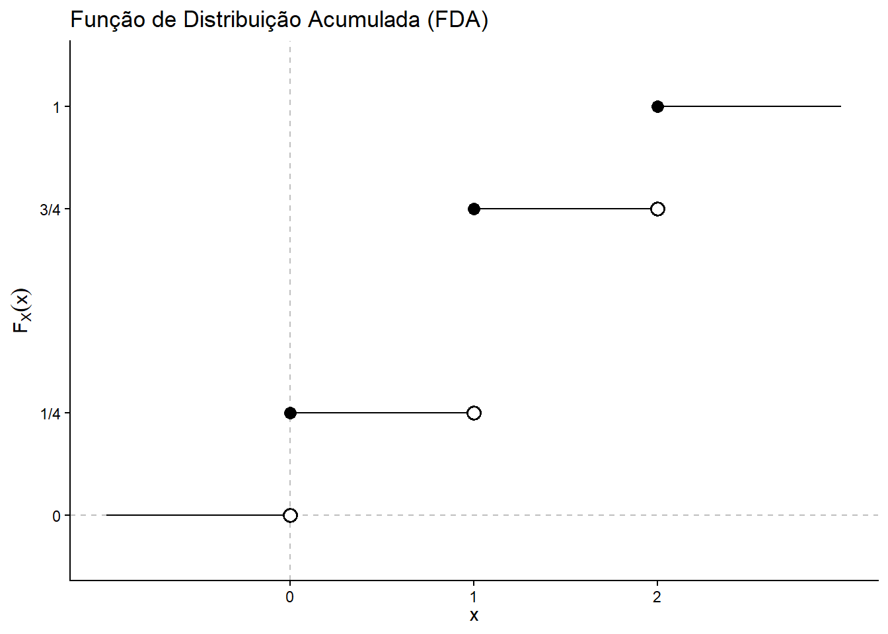
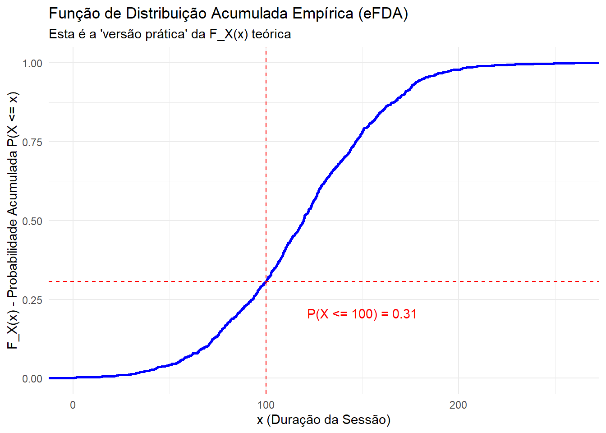

7 Função de Distribuição Acumulada (FDA)
Na aula anterior, definimos uma variável aleatória (v.a.) \(X\) como uma feature ou métrica (ex: session_duration).
Na prática, especialmente com features contínuas, a pergunta “Qual a probabilidade da sessão durar exatamente 120.53 segundos?” não é útil (a resposta é zero!).
As perguntas de negócio que realmente importam são sobre limites (thresholds):
- “Qual a chance da transação ser menor ou igual a R$ 100?”
- “Qual a proporção de clientes com score de risco abaixo de 0.2?”
- “Qual a probabilidade do tempo de resposta do servidor ser maior que 3 segundos?” (uma quebra de SLA).
A Função de Distribuição Acumulada (FDA), ou Cumulative Distribution Function (CDF), é a ferramenta matemática que responde a todas essas perguntas.
Definição 7.1 (Definição 2.2 (Função de Probabilidade)) A função de distribuição (acumulada), f.d.a., de uma v.a. X, representada por \(F_X\) (ou simplesmente por F), é definida por: \[ F_X(x) = \mathbb{P}(X \le x), \quad x \in \mathbb{R} \]
DicaPerspectiva de Data Science: A FDA é o Fundamento dos p-values e Quantis
- Análise de Risco: \(F_X(0.2) = 0.15\) significa “15% dos seus clientes têm score de risco abaixo de 0.2”.
- Percentis/Quantis: A FDA é a função que invertemos para encontrar quantis. “Qual o 95º percentil do tempo de resposta?” é o mesmo que “Encontre o valor \(x\) tal que \(F_X(x) = 0.95\)”.
- Testes de Hipótese: Um p-value é o resultado de uma FDA. Por exemplo, \(p = F_Z(-1.96)\) (em um teste de cauda esquerda) nos dá a probabilidade acumulada de ver um resultado tão extremo ou menor.
Exemplo 7.1 (Exemplo 2.7) Um usuário vê dois anúncios (Ad_1, Ad_2). Suponha que a chance de clicar em cada um é de 50% (\(p=0.5\)) e os eventos são independentes. Seja \(X = n^{o}\) de anúncios clicados. Obtenha \(F_X\).
Temos \(\Omega = \{(0,0), (0,1), (1,0), (1,1)\}\) (0=não-clique, 1=clique) e a v.a. assume os valores \(X=0, 1, 2\).
- \(\mathbb{P}(X=0) = \mathbb{P}(\{(0,0)\}) = 0.5 \times 0.5 = 1/4\)
- \(\mathbb{P}(X=1) = \mathbb{P}(\{(0,1), (1,0)\}) = 2 \times (0.5 \times 0.5) = 1/2\)
- \(\mathbb{P}(X=2) = \mathbb{P}(\{(1,1)\}) = 0.5 \times 0.5 = 1/4\)
A FDA \(F_X(x) = \mathbb{P}(X \le x)\) acumula essas probabilidades:
\[ F_X(x) = \mathbb{P}(X \le x) = \begin{cases} \mathbb{P}(\emptyset) = 0, & \text{se } x < 0 \\ \mathbb{P}(X=0) = 1/4, & \text{se } 0 \le x < 1 \\ \mathbb{P}(X=0) + \mathbb{P}(X=1) = 1/4 + 1/2 = 3/4, & \text{se } 1 \le x < 2 \\ \mathbb{P}(\Omega) = \mathbb{P}(X=0) + \mathbb{P}(X=1) + \mathbb{P}(X=2) = 1, & \text{se } x \ge 2 \end{cases} \]
O gráfico desta f.d.a. esta na figura abaixo.
Proposição 7.1 (Proposição 2.1) Se X é uma v.a., sua função de distribuição goza das seguintes propriedades:
- P1. \(x \le y \rightarrow F(x) \le F(y)\) (i.e. F é não decrescente).
- P2. Se \(x_n \downarrow x\), então \(F(x_n) \downarrow F(x)\) (i.e. F é contínua à direita).
- P3. Se \(x_n \downarrow -\infty\), então \(F(x_n) \downarrow 0.\) Se \(x_n \uparrow \infty\), então \(F(x_n) \uparrow 1.\)
Demonstração:
P1: Seja \(x \le y \rightarrow \{X \le x\} \subseteq \{X \le y\}\). \(\Rightarrow \mathbb{P}(X \le x) \le \mathbb{P}(X \le y)\) (pela Propriedade 3 da probabilidade). \(\rightarrow F(x) \le F(y)\).
P2: Seja \(x_n \downarrow x\), então \(\{X \le x_n\} \downarrow \{X \le x\}\). Pela Continuidade da Probabilidade (Teorema thm-continuidade): \(\mathbb{P}(\{X \le x_n\}) \downarrow \mathbb{P}(\{X \le x\})\). \(\Rightarrow F(x_n) \downarrow F(x)\).
P3: Se \(x_n \downarrow -\infty\), então \(\{X \le x_n\} \downarrow \emptyset \rightarrow F(x_n) \downarrow 0\). Se \(x_n \uparrow \infty\), então \(\{X \le x_n\} \uparrow \Omega \rightarrow F(x_n) \uparrow 1\).
Comentário: Toda função F satisfazendo P1, P2, P3 é a função de distribuição de alguma variável aleatória.
Observação: Uma função de distribuição pode corresponder a várias v.a.s no mesmo espaço de probabilidade. Por exemplo, se \(X \sim N(0, 1) \rightarrow -X \sim N(0, 1)\) e \(F_X = F_{-X}\). No entanto \(\mathbb{P}(X = -X) = \mathbb{P}(2X = 0) = \mathbb{P}(X = 0) = 0\).
Notação: O símbolo “\(\sim\)” significa “tem como distribuição” ou “está distribuído como”.
7.1 Tipos de Variáveis Aleatórias
A FDA nos permite classificar as variáveis aleatórias. Na prática, isso se traduz diretamente nos tipos de dados que analisamos: dados de contagem (discretos), dados de medição (contínuos) e dados censurados (mistos).
Definição 7.2 (Definição 2.3)
A v.a. X é dita ser discreta se toma valores em um conjunto finito ou infinito enumerável, isto é, se existe um conjunto \(\{x_1, x_2, \dots\} \subset \mathbb{R}\) tal que \[ X(\omega) \in \{x_1, x_2, \dots\}, \forall \omega \in \Omega. \] A função \[ p(x_i) = \mathbb{P}(X = x_i), \quad i=1, 2, \dots \] é chamada função de probabilidade (f.p.) de X.
A v.a. X é dita ser (absolutamente) contínua se existe uma função \(f(x) \ge 0\) tal que \[ F_X(x) = \int_{-\infty}^{x} f(t) dt, \quad \forall x \in \mathbb{R} \] Neste caso, dizemos que \(f\) é a função densidade de probabilidade (f.d.p.) de X.
DicaPerspectiva de Data Science: FP vs. FDP (Gráfico de Barras vs. Densidade)
- a) Discreta (FP): Pense em
featurecomoclick_count,star_rating(1, 2, 3, 4, 5) ounum_purchases.- A função de probabilidade (f.p.) \(p(x_i)\) é o que você vê em um gráfico de barras (
geom_col) após normalizar (ex:prop.table(count(df, click_count))). - \(p(x_i)\) é uma probabilidade (ex: \(p(3) = \mathbb{P}(X=3) = 0.15\) ou “15% dos usuários clicaram 3 vezes”).
- A função de probabilidade (f.p.) \(p(x_i)\) é o que você vê em um gráfico de barras (
- b) Contínua (FDP): Pense em
featurecomosession_duration,transaction_amountouscore_de_risco.- A função densidade de probabilidade (f.d.p.) \(f(x)\) é a curva suave que você vê em um gráfico de densidade (
geom_density). - \(f(x)\) não é uma probabilidade! É uma “densidade”. A probabilidade é a área sob a curva. A probabilidade de exatamente \(X=120.53s\) é zero. A probabilidade de \(X \in [120, 121]\) é a integral (área) de \(f(x)\) entre 120 e 121.
- A função densidade de probabilidade (f.d.p.) \(f(x)\) é a curva suave que você vê em um gráfico de densidade (
Notas:
- Se X é discreta, então \(\{X\leq x\}=\bigcup_{i: x_i \le x}\{X=x_i\},\) logo \[ F_X(x) = \mathbb{P}(X \le x) = \mathbb{P}(\bigcup_{i: x_i \le x} \{X = x_i\}) = \sum_{i: x_i \le x} p(x_i).\]
- De forma geral, uma f.p. é qualquer função \(p(\cdot)\) tal que \(p(x) \ge 0, \forall x \in \mathbb{R}\) e \(\sum_{x \in K} p(x) = 1\) (onde K é o conjunto de valores possíveis de X).
- Se X é absolutamente contínua, então \(F_X\) é contínua. Tecnicamente, a integral na Definição 2.3.b) é de Lebesgue e X tem densidade se, e só se, \(F_X\) é absolutamente contínua (isto é, \(F_X\) é a integral de sua densidade). Neste caso, \[ f(x) = F_X'(x) \] em quase todo ponto (exceto num conjunto de medida de Lebesgue nula, isto é, comprimento zero).
- Uma função \(f(\cdot)\) é uma f.d.p. se:
- \(f(x) \ge 0, \forall x \in \mathbb{R}\)
- \(\int_{-\infty}^{\infty} f(x) dx = 1\)
- A f.d.p. não é única. Por exemplo, seja \[ F_X(x) = \begin{cases} 0, & x < 0 \\ x, & 0 \le x < 1 \\ 1, & x \ge 1 \end{cases} \] Podemos obter um candidato para \(f(\cdot)\) fazendo \(f_X^1(x) = \frac{d}{dx} F(x) = 1, x \in (0, 1)\) e 0 caso contrário. Também poderíamos ter \(f_X^2(x) = 1\) para \(x \in [0, 1/2] \cup (1/2, 1]\) (i.e., mudando um ponto).
Exemplo 7.2 (Exemplo 2.8 (Variável Aleatória Mista)) Seja X tal que \(X \sim U(0, 1)\), isto é, X tem função de dist. \[ F_X(x) = \begin{cases} 0, & x < 0 \\ x, & 0 \le x < 1 \\ 1, & x \ge 1 \end{cases} \] Defina \(Y = \min(X, 1/2)\). Obtenha a f.d.a. de Y. \[ Y(\omega) = \begin{cases} X(\omega), & 0 \le X(\omega) < 1/2 \\ 1/2, & 1/2 \le X(\omega) \le 1 \end{cases} \] \(F_Y(y) = \mathbb{P}(Y \le y), y \in \mathbb{R}\).
- Para \(y < 0\), temos que \(F_Y(y) = 0\).
- Para \(0 \le y < 1/2\), temos \[ F_Y(y) = \mathbb{P}(Y \le y) = \mathbb{P}(\{\omega \in \Omega : Y(\omega) \le y\}) \] \[ = \mathbb{P}(\{\omega \in \Omega : X(\omega) \le y\}) = F_X(y) = y \]
- Para \(y \ge 1/2\), \(F_Y(y) = 1\).
Em resumo, \[ F_Y(y) = \begin{cases} 0, & y < 0 \\ y, & 0 \le y < 1/2 \\ 1, & y \ge 1/2 \end{cases} \]
Note que \(F_Y(y)\) é contínua em \((-\infty, 1/2)\) e \([1/2, \infty)\) e descontínua em \(y = 1/2\).
Definição 7.3 (Definição 2.4) Uma v.a. X é dita ser singular se \(F_X'(x) = 0, \forall x \in \mathbb{R}\), exceto para um conj. de medida de Lebesgue nula e \(F_X\) é contínua.
Exemplo 7.3 (Exemplo 2.9 (Função de Cantor)) Ver exemplo 7 - James (2003) p. 41.
Proposição 7.2 (Proposição 2.2)
Se X é uma v.a. discreta tomando valores em \(\{x_1, x_2, \dots\}\) então \[ \mathbb{P}_X(B) = \sum_{i: x_i \in B} p(x_i), \quad \forall B \in \mathcal{B} \]
Se X é abs. contínua com densidade \(f\) então \[ \mathbb{P}_X(B) = \int_{B} f(x) dx, \quad \forall B \in \mathcal{B} \]
DicaPerspectiva de Data Science: Como Calcular Probabilidades
Esta proposição é o “como fazer”:
- a) Discreta: Para saber \(\mathbb{P}(\text{star\_rating} > 3)\), você soma as probabilidades das barras: \(\mathbb{P}(\text{rating}=4) + \mathbb{P}(\text{rating}=5)\).
- b) Contínua: Para saber \(\mathbb{P}(\text{duration} \in [60, 120])\), você integra (calcula a área sob a curva) \(f(x)\) de 60 a 120. Na prática, \(\mathbb{P}(X \le 120) - \mathbb{P}(X \le 60) = F_X(120) - F_X(60)\).
7.2 Implementação Prática em R
Na prática, não conhecemos a \(F_X\) teórica; nós a estimamos a partir dos dados. Isso é chamado de Função de Distribuição Acumulada Empírica (eFDA).
library(tidyverse)
library(patchwork)
# Usando os dados da aula anterior
set.seed(42)
Omega_data <- tibble(
user_id = 1:1000,
X_session_duration = abs(rnorm(1000, 120, 40)),
Y_click_count = rpois(1000, 1.5),
Z_is_vip = sample(c(0, 1), 1000, replace = TRUE, prob = c(0.9, 0.1))
)
# Criando a V.A. Mista (Dados Censurados)
# Vamos "censurar" ou "capar" a duração em 180s (timeout)
# W = min(X, 180)
Omega_data <- Omega_data |>
mutate(
W_duration_censored = pmin(X_session_duration, 180)
)Calculando um Ponto na eFDA
A definição \(F_X(x) = \mathbb{P}(X \le x)\) se traduz em R para: mean(X <= x)
Isso calcula a proporção de observações no dataset que são menores ou iguais a \(x\).
# Qual a P(Duração da Sessão <= 100 segundos)?
x_threshold <- 100
# Usamos mean() que age como P(A) = count(A) / count(Omega)
prob_acumulada <- Omega_data |>
summarise(
F_X_de_100 = mean(X_session_duration <= x_threshold)
) |>
pull(F_X_de_100)
cat("Estimativa de F_X(100):", prob_acumulada, "\n")Estimativa de F_X(100): 0.307 Isso significa que 31% das sessões duram 100s ou menos.
Plotando a eFDA Completa
O ggplot2 tem uma função dedicada para plotar a eFDA: stat_ecdf(). Ela faz o cálculo acima para todos os valores de \(x\) e desenha a curva.
# O valor que acabamos de calcular
x_val <- 100
y_val <- prob_acumulada
ggplot(Omega_data, aes(x = X_session_duration)) +
# Plota a eFDA
stat_ecdf(geom = "step", color = "blue", linewidth = 1) +
# Linhas de anotação para o nosso ponto
geom_hline(yintercept = y_val, color = "red", linetype = "dashed") +
geom_vline(xintercept = x_val, color = "red", linetype = "dashed") +
# Anotação
annotate("text", x = 150, y = y_val - 0.1,
label = paste0("P(X <= 100) = ", round(y_val, 2)),
color = "red") +
labs(
title = "Função de Distribuição Acumulada Empírica (eFDA)",
subtitle = "Esta é a 'versão prática' da F_X(x) teórica",
x = "x (Duração da Sessão)",
y = "F_X(x) - Probabilidade Acumulada P(X <= x)"
) +
theme_minimal()
Visualizando os 3 Tipos de V.A.s
Vamos comparar as Funções de Probabilidade/Densidade (FP/FDP) com as Funções de Distribuição (FDA) para nossos 3 tipos de v.a.s.
V.A. Discreta (Y_click_count)
# Função de Probabilidade (FP) - Gráfico de Barras
p1 <- Omega_data |>
count(Y_click_count) |>
mutate(prob = n / sum(n)) |>
ggplot(aes(x = factor(Y_click_count), y = prob)) +
geom_col(fill = "blue", alpha = 0.8) +
labs(title = "V.A. Discreta: Função de Probabilidade (FP)",
x = "Y (Contagem de Cliques)",
y = "p(y) = P(Y=y)") +
theme_minimal()
# Função de Distribuição (FDA) - Gráfico de Degraus
p2 <- ggplot(Omega_data, aes(x = Y_click_count)) +
stat_ecdf(geom = "step", color = "blue", linewidth = 1) +
labs(title = "V.A. Discreta: FDA (eCDF)",
x = "y (Contagem de Cliques)",
y = expression(F[Y](y))) +
theme_minimal()
# Combinar gráficos
p1 + p2V.A. Contínua (X_session_duration)
# Função Densidade de Probabilidade (FDP) - Gráfico de Densidade
p3 <- ggplot(Omega_data, aes(x = X_session_duration)) +
geom_density(fill = "green", color = "darkgreen", alpha = 0.7) +
labs(title = "V.A. Contínua: Função Densidade (FDP)",
x = "X (Duração da Sessão)",
y = "f(x) (Densidade)") +
theme_minimal()
# Função de Distribuição (FDA) - Curva Suave
p4 <- ggplot(Omega_data, aes(x = X_session_duration)) +
stat_ecdf(geom = "line", color = "green", linewidth = 1) +
labs(title = "V.A. Contínua: FDA (eCDF)",
x = "x (Duração da Sessão)",
y = expression(F[X](x))) +
theme_minimal()
# Combinar gráficos
p3 + p4V.A. Mista (W_duration_censored)
# "Densidade" - Histograma (note o pico!)
p5 <- ggplot(Omega_data, aes(x = W_duration_censored)) +
geom_histogram(aes(y = after_stat(density)), bins = 30, fill = "purple", alpha = 0.8) +
labs(title = "V.A. Mista: Histograma (Note o 'pico' da censura)",
x = "W (Duração Censurada em 180s)",
y = "Densidade") +
theme_minimal()
p6 <- ggplot(Omega_data, aes(x = W_duration_censored)) +
stat_ecdf(geom = "step", color = "purple", linewidth = 1) +
labs(title = "V.A. Mista: FDA (Note o 'Salto')",
x = "w (Duração Censurada em 180s)",
y = expression(F[W](w))) +
theme_minimal()
# Combinar gráficos
p5 + p6